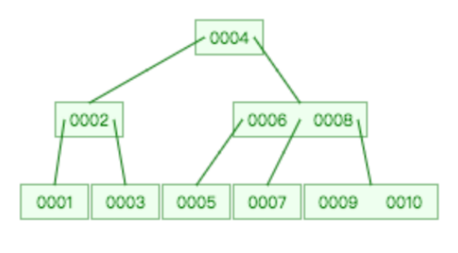
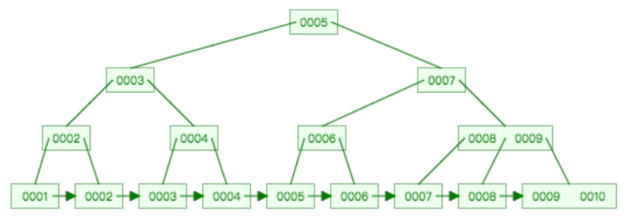
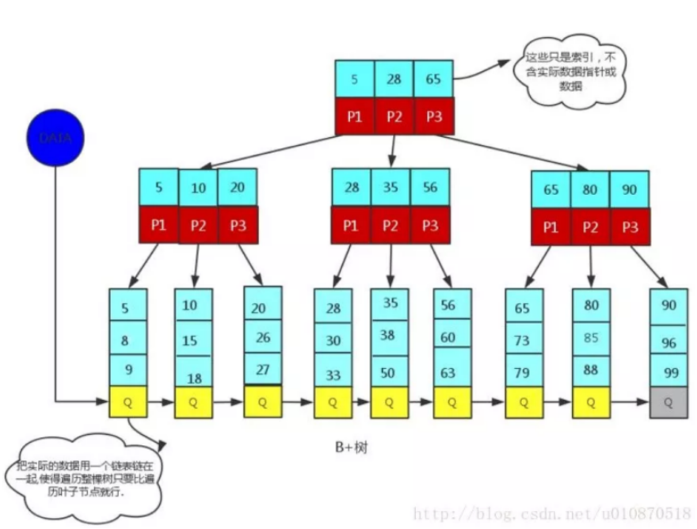

为什么采用B+Tree不采用B-Tree
B-Tree

B+Tree

B-Tree和B+Tree区别

1、B+Tree为所有叶子节点增加一个链指针
2、所有关键字都在叶子节点出现
3、非叶子节点相当于是叶子节点的索引，叶子节点相当于是存储数据的数据层
为什么B+Tree更适合做索引
B+Tree的磁盘读写代价更低
B+Tree的内部节点没有指向关键字具体信息的指针（不包含数据），因此其内部节点比B-Tree更小
如果把同一内部节点的关键字存放在同一个盘块中，那么盘块能容纳的关键字就更多
一次I/O读入就能加载更多的信息
- 这样树应该也会矮一些（因为mysql中当节点存储的数据大于盘块时就分列）
- 数据结构更矮胖
B+Tree查找效率更加稳定
任何关键字的查找都必须走一条从根节点到叶子节点的路，所以关键字的查询路径长度相同，导致每一个数据的查询效率相当。
方便扫库
B+Tree只需要扫一遍叶子节点即可。B-Tree遍历效率低下。
B+Tree更适合做范围查询
分别找到开始和结束节点，然后从开始叶子节点遍历出来即可，而且还能保证顺序。